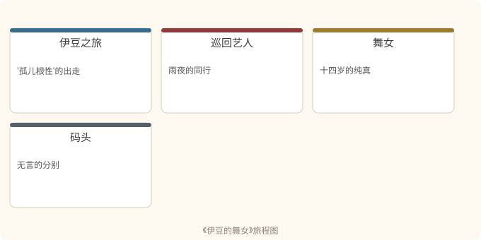

伊豆的舞女
一、基本信息
| 作者 | 川端康成 |
|---|---|
| 成书/出版 | 1926年（作者页 B054/B027 口径：伊豆的舞女（1926）） Kawabata Yasunari — Encyclopaedia Britannica（百科全书） |
| 国别/地区 | 日本 |
| 时代 | 现当代 · 20世纪 |
| 体裁 | 中篇小说 |
| 语言 | 日语 |

《伊豆的舞女》旅程图（主题·结构图）
二、创作背景
作者页（B054/B027）：川端康成 major_works 载'伊豆的舞女（1926）'——早期成名作（作者页定位，详见 xueguo 条核对）。
川端为1968年诺贝尔文学奖得主（作者页定位）。
三、内容脉络
二十岁的'我'独自去伊豆旅行，与巡回艺人结伴——十四岁舞女的朦胧情愫（通说）。
码头的分别：无言的泪水（通说待核）。
四、主要人物表
| 人物 | 身份 | 说明 |
|---|---|---|
| 舞女 | 巡回艺人 | 十四岁（通说待核） |
| 我 | 高中学生 | '孤儿根性'的青年（通说待核） |
五、主题与艺术特点
- '孤儿根性'的治愈之旅（通说待核）。
- 洁净的初恋：发乎情止乎礼（通说）。
- 伊豆山水与人情（通说）。
六、影响与评论
- 作者页：川端早期代表作（B054/B027 作者页口径）。
Kawabata Yasunari — Encyclopaedia Britannica（百科全书） - 六次电影改编（通说待核）。
Kawabata Yasunari — Encyclopaedia Britannica（百科全书）
七、阅读建议
难点
- '孤儿根性'的自卑语境。
- 巡回艺人行当。
- 《伊豆的舞女》（上海译文出版社/南海出版公司版本，通说待核）。
- 日文原版（公有领域渐近）。
先本作后《雪国》。
八、待核实
- 1926年（《文艺时代》说）核对。
- 舞女名（薰子——通说）核对。
- 电影改编次数待核。
本页主要来源
- Kawabata Yasunari — Encyclopaedia Britannica（百科全书）
- Snow Country (Yukiguni) — Encyclopaedia Britannica（百科全书）
川端康成的其他收录作品：雪国